1. Inteligencia Artificial y Cambio Organizacional
Ponente: Hernán Alejandro Hildebrandt
La participación de Hernán Alejandro Hildebrandt destacó por un enfoque muy particular: conectar la tecnología con la mente humana y la cultura organizacional..
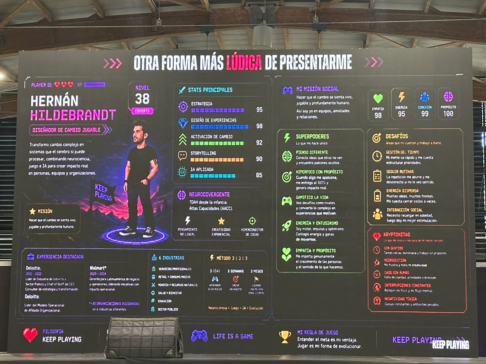
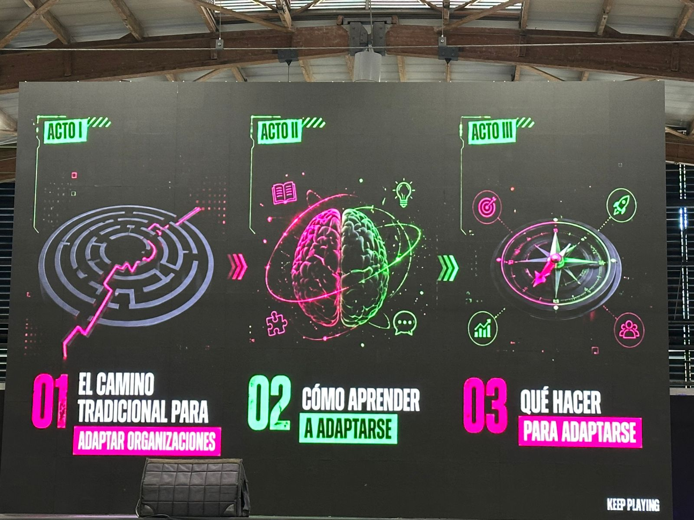
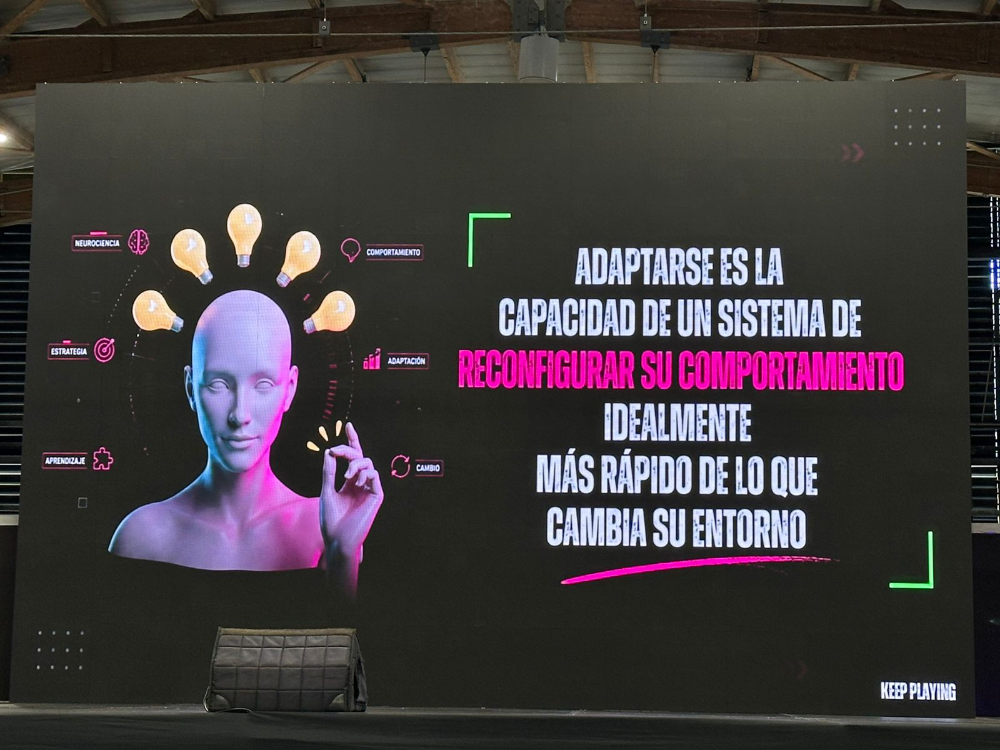
En esta sesión se exploró cómo el cambio complejo se transforma en sistemas procesables mediante neurociencia y gamificación. Se discutió la capacidad de los sistemas para reconfigurar su comportamiento ante entornos cambiantes y las estadísticas de por qué el 70% de las transformaciones suelen fallar.
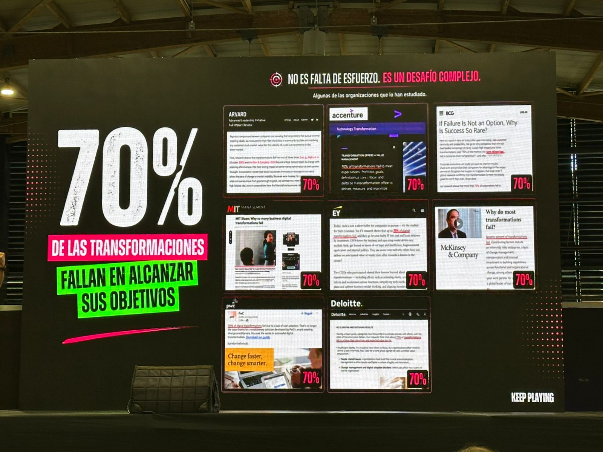
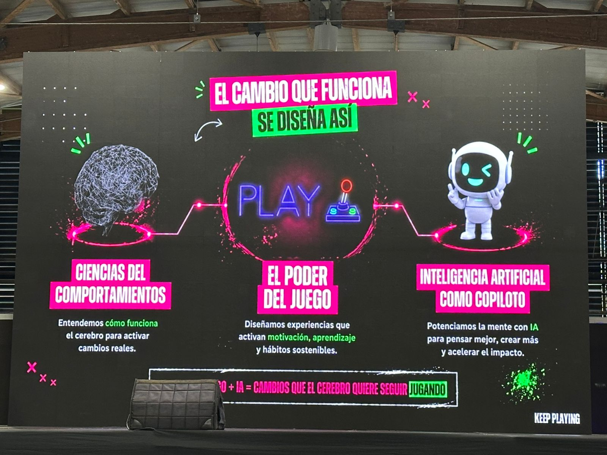
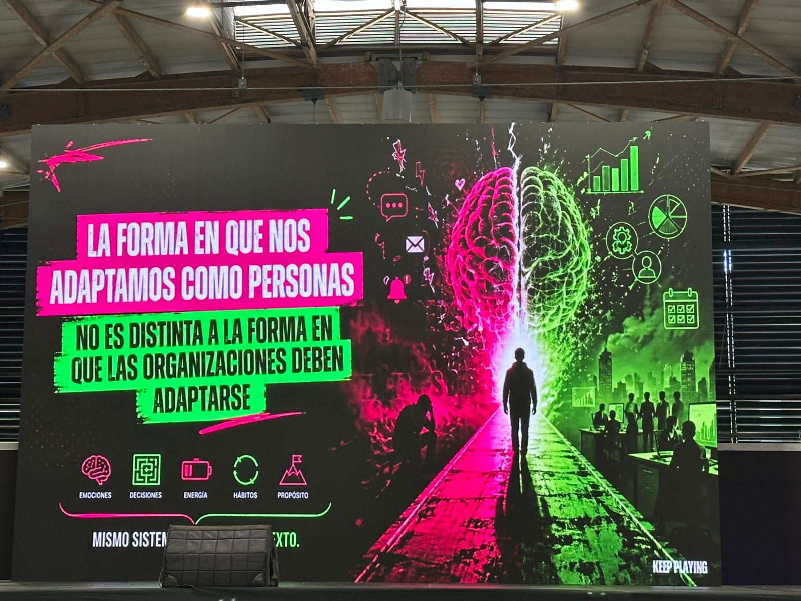
La tecnología sin adopción humana no sirve El discurso suele desafiar la idea de que la transformación digital es solo un asunto de comprar software, infraestructura o implementar Inteligencia Artificial.
Gamificación y Videojuegos en las Organizaciones Como cofundador de Hahuun y desarrollador de negocios en TGA, Hernán es un firme defensor de que el juego es la herramienta de aprendizaje más poderosa del cerebro humano. En su presentación, destacó cómo la gamificación puede ser un catalizador para la adopción de nuevas tecnologías y la transformación organizacional, haciendo que el proceso sea más atractivo y efectivo para los empleados.
2. Soluciones FinTech para Colombia
Panelistas de: Saque y Pague Colombia, Latam Trade Capital & Payments Way Solutions
Un panel enfocado en el ecosistema financiero digital en Colombia. Se discutieron soluciones tecnológicas de crédito, pagos y capital de trabajo para personas y empresas, destacando la participación de líderes de la industria como Lyda Wilches (Saque y Pague), Giovanni Vellojin (Payments Way Solutions) y Edilberto Soto (Latam Trade Capital).
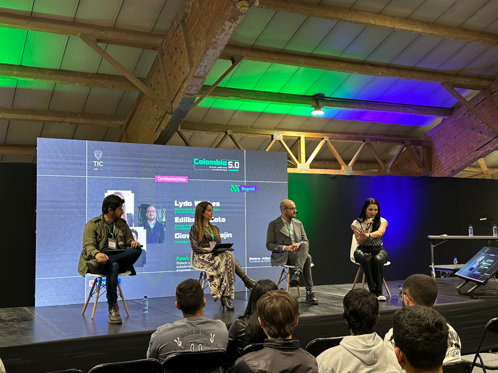
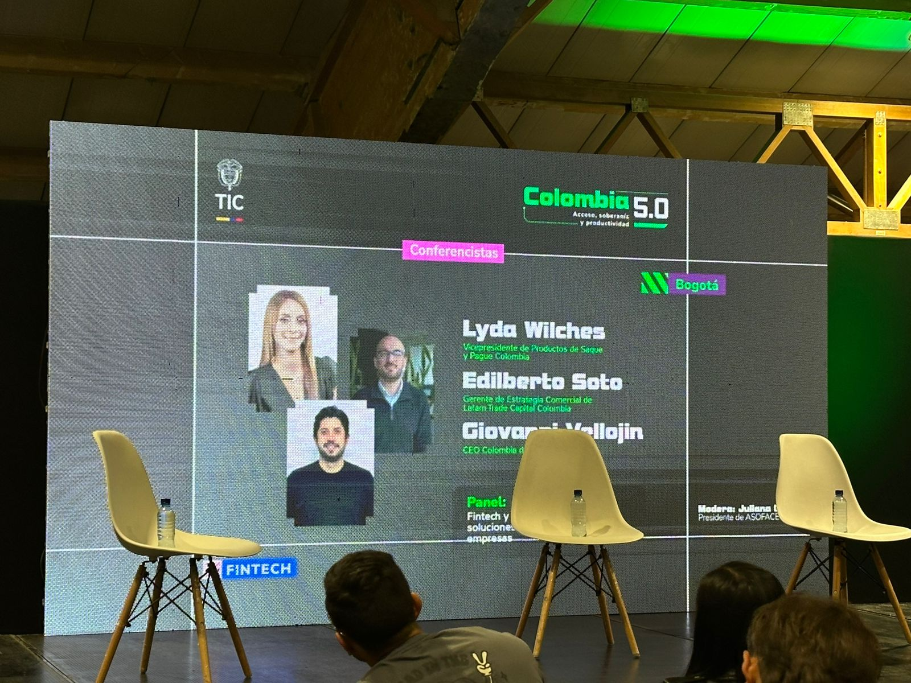
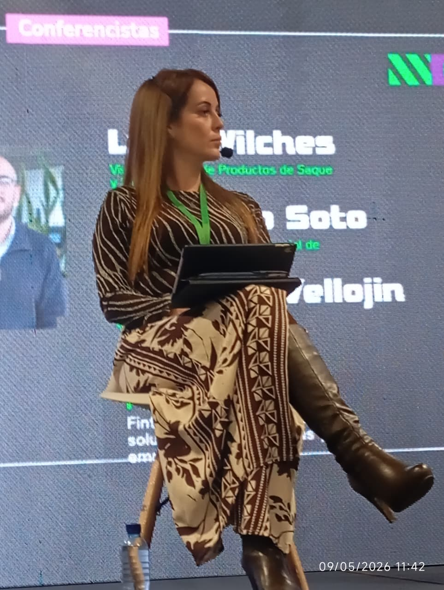
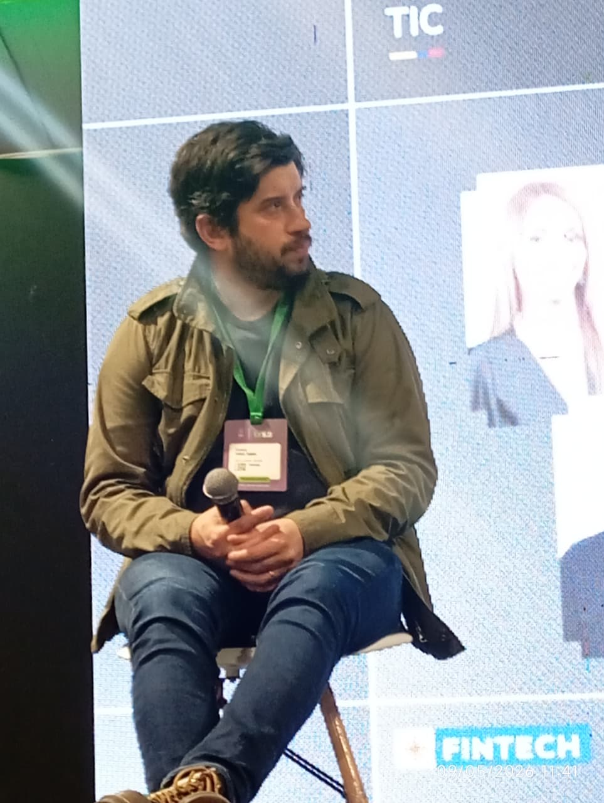
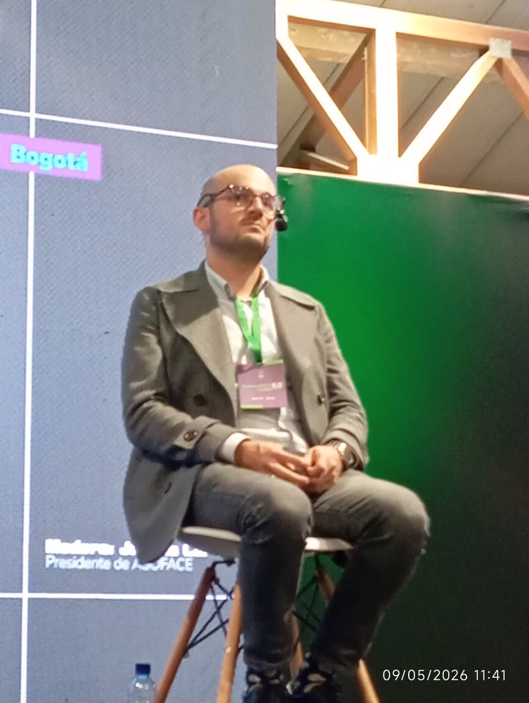
Saque y Pague Colombia (El puente entre lo físico y lo digital): Ellos son una red de autoatención (cajeros automáticos multired y de reciclaje de efectivo). Ellos defienden una postura muy realista: el efectivo no va a desaparecer mañana en Colombia.
Payments Way Solutions (La carretera digital de los pagos): Son expertos en pasarelas de pago y procesamiento de transacciones. Su papel en esta ecuación es la conectividad y la agilidad de los rieles de pago digitales.
Latam Trade Capital (El motor de liquidez para las empresas): A diferencia de las otras dos, que miran mucho al consumidor final o al punto de venta, Latam Trade Capital se enfoca en el financiamiento corporativo, especialmente a través del factoring (compra de facturas) y capital de trabajo.
Gratitud por la invitación y la experiencia
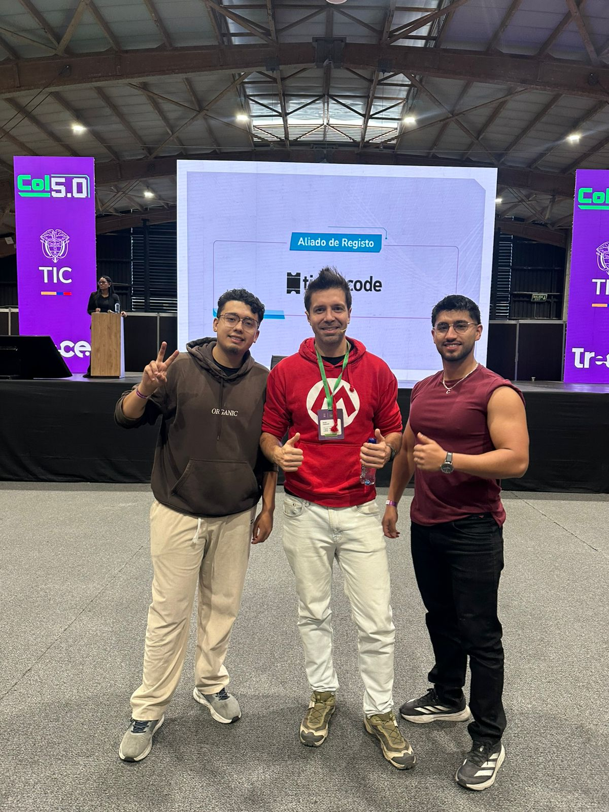